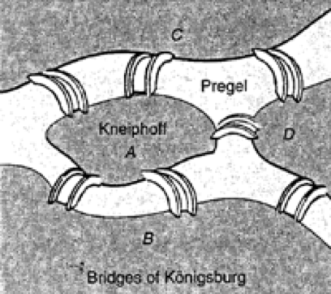
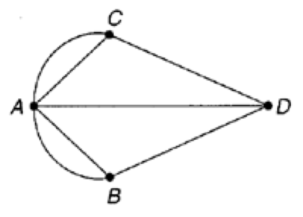

History of Networks
In the 18th century in the town of Königsberg, Germany, a favorite pastime was walking along the Pregel River and strolling over the town's seven bridges. During this period a natural question arose: Is it possible to take a walk and cross each bridge only once? Before reading further, can you determine the answer? This question was solved by the Swiss mathematician Leonard Euler. His solution was the beginning of network theory. 
Euler represented the four land areas of Königsberg (A, B, C, and D in Figure 2) as four points and the seven bridges as seven lines joining these points. For example, the island of Kneiphoff (A) can be reached by five bridges, and in the diagram in Figure 2 there are five lines to point A. The three lines from point D represent three bridges, etc. This kind of diagram is called a network graph, or more simply, a network. Notice that Euler was concerned not with the size and shape of the bridges and land regions but rather with how the bridges were connected. 